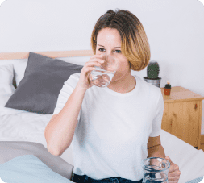
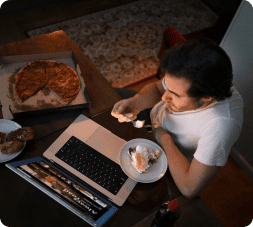
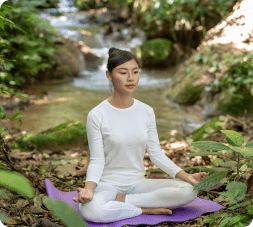
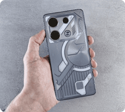
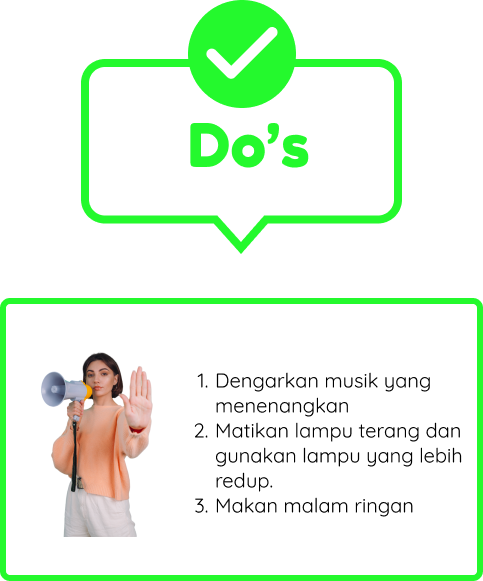
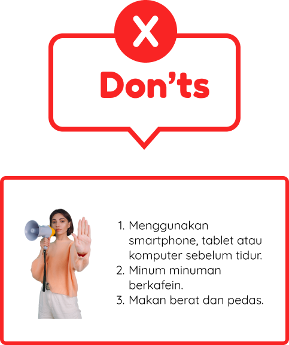

Daily Routine


Aktivitas Malam
Batasi kafein setelah pukul 12 siang dan pilih makan malam yang ringan untuk tidur
nyenyak. Praktikkan teknik relaksasi atau meditasi sebelum tidur dan matikan semua
gadget satu jam sebelum tidur untuk menghindari paparan blue light yang dapat
mengganggu produksi hormon melatonin.
Langkah-langkah Aktivitas Malam
Minum 1–2 gelas air putih sebelum tidur

Minum air sebelum tidur memang memiliki banyak manfaat, tetapi minum air dengan
jarak yang sangat dekat dengan waktu tidur berisiko mengganggu siklus tidur kamu
dan berdampak negatif terhadap kesehatan
Kurang Cairan Mempunyai Dampak Buruk yang Significant terhadap Kesehatan Fisik dan Mental.
Kurang Cairan Mempunyai Dampak Buruk yang Significant terhadap Kesehatan Fisik dan Mental.
Makan Malam yang Ringan

Makan malam yang sehat sangat penting untuk meningkatkan kualitas tidur
Makan malam yang sehat sangat penting untuk meningkatkan kualitas tidur
karena makanan yang kita konsumsi dapat mempengaruhi berbagai aspek fisik dan mental yang berhubungan dengan tidur. Hindari makan malam yang berat dan pilihlah makanan yang ringan dan mudah dicerna untuk menghindari gangguan tidur.
Memperhatikan waktu makan malam yang sehat dapat membantu tubuh mempersiapkan proses pencernaan dan merasa lebih nyaman saat tidur
sehingga mendukung kualitas tidur yang lebih baik secara keseluruhan. Adapun waktu yang ideal untuk mengkonsumsi makan malam adalah 2-3 jam sebelum tidur. Dengan begitu, tubuh memiliki waktu yang cukup untuk mencerna makanan sebelum tidur.
Makan malam yang sehat sangat penting untuk meningkatkan kualitas tidur
karena makanan yang kita konsumsi dapat mempengaruhi berbagai aspek fisik dan mental yang berhubungan dengan tidur. Hindari makan malam yang berat dan pilihlah makanan yang ringan dan mudah dicerna untuk menghindari gangguan tidur.
Memperhatikan waktu makan malam yang sehat dapat membantu tubuh mempersiapkan proses pencernaan dan merasa lebih nyaman saat tidur
sehingga mendukung kualitas tidur yang lebih baik secara keseluruhan. Adapun waktu yang ideal untuk mengkonsumsi makan malam adalah 2-3 jam sebelum tidur. Dengan begitu, tubuh memiliki waktu yang cukup untuk mencerna makanan sebelum tidur.
Berikut beberapa hal yang dapat dilakukan untuk memaksimalkan kualitas tidur
dari rutinitas makan malam:
- Makan 2-3 jam sebelum tidur.
- Hindari makan berat di malam hari.
- Makan dengan porsi kecil
- Hindari cemilan tinggi lemak dan gula
- Menjaga konsistensi waktu makan
- Minum cukup air
Teknik Relaksasi atau Meditasi

Tahukah Kamu?
Teknik relaksasi merupakan teknik non-farmakologi yang paling umum digunakan untuk treatment insomnia loh! Insomnia, atau kesulitan tidur, dapat diatasi dengan berbagai teknik relaksasi yang bertujuan untuk menenangkan pikiran dan tubuh. Beberapa teknik relaksasi seperti teknik pernapasan juga sudah terbukti efektif untuk mengurangi insomnia.
Latihan pernapasan teratur, meditasi, atau yoga dapat membantu memperbaiki pola tidur dan mengurangi kecemasan dan stres yang mendasarinya
Relaksasi dapat menjadi rutinitas sehari-hari dengan meluangkan waktu 10-15 menit untuk menenangkan pikiran.
Teknik relaksasi merupakan teknik non-farmakologi yang paling umum digunakan untuk treatment insomnia loh! Insomnia, atau kesulitan tidur, dapat diatasi dengan berbagai teknik relaksasi yang bertujuan untuk menenangkan pikiran dan tubuh. Beberapa teknik relaksasi seperti teknik pernapasan juga sudah terbukti efektif untuk mengurangi insomnia.
Latihan pernapasan teratur, meditasi, atau yoga dapat membantu memperbaiki pola tidur dan mengurangi kecemasan dan stres yang mendasarinya
Relaksasi dapat menjadi rutinitas sehari-hari dengan meluangkan waktu 10-15 menit untuk menenangkan pikiran.
Berikut beberapa hal yang dapat dilakukan untuk memaksimalkan kualitas tidur
dari rutinitas makan malam:
- Makan 2-3 jam sebelum tidur.
- Hindari makan berat di malam hari.
- Makan dengan porsi kecil
- Hindari cemilan tinggi lemak dan gula
- Menjaga konsistensi waktu makan
- Minum cukup air
Hindari Layar Gadget

Matikan semua layar gadget setidaknya satu jam sebelum
tidur
termasuk smartphone, tablet, dan komputer, karena cahaya biru dapat mengganggu tidur.
termasuk smartphone, tablet, dan komputer, karena cahaya biru dapat mengganggu tidur.
Sebuah penelitian baru-baru ini melaporkan bahwa paparan blue light yang
berdampak negatif terhadap tidur dan sistem sirkadian. Paparan blue light
juga dapet menekan produksi melatonin . Melatonin adalah hormon yang
menyebabkan kita mengantuk.

